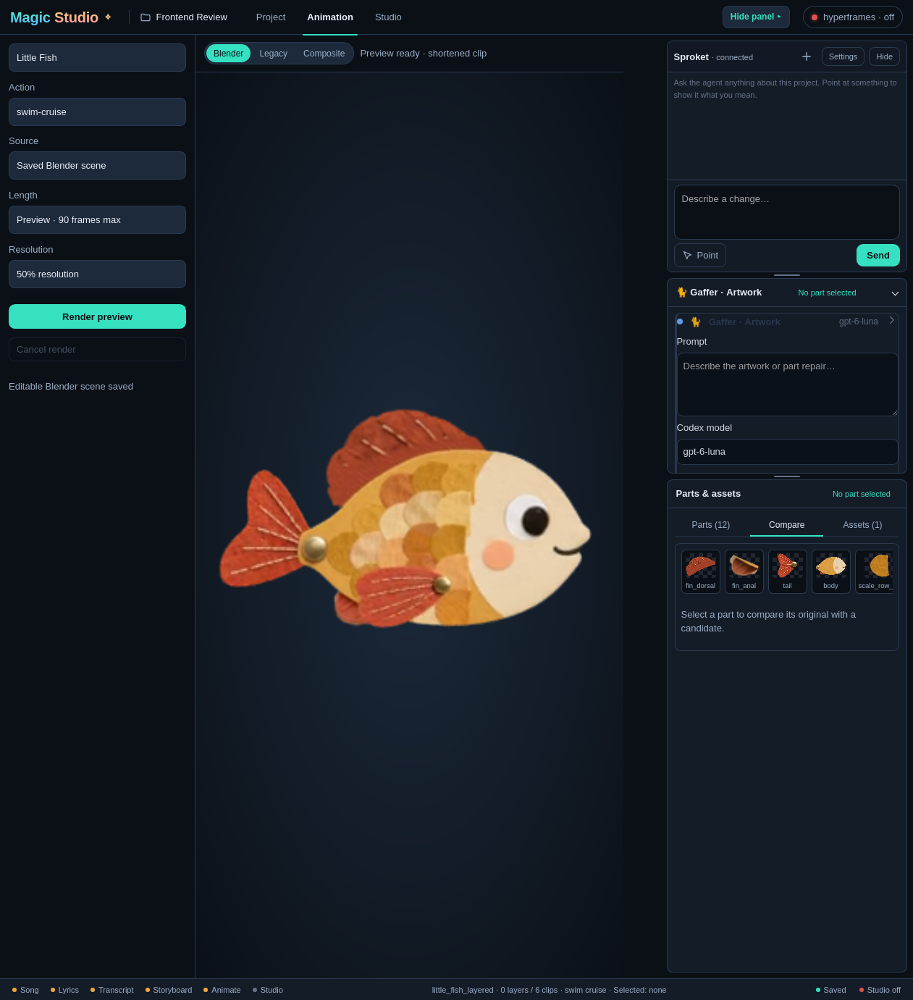

Magic Studio · whole-system design proposal
This proposal covers all four views (Home, Project, Animation and Studio), each at full screen (1920) and at the widths the shell skill says to test: 1261, 941 and 700px. The right sidebar (Sproket, Gaffer, Parts) is part of every project view and keeps its own page, with a recommended layout and an alternative. Nothing here is implemented.
Honesty notes: Gaffer's candidate art is a placeholder (the original tail). Storyboard lyric lines are placeholders. The Studio preview is a real HyperFrames frame from an earlier test placement of the fish clip, not a finished film. Items in dashed amber are proposed features (templates, part editing). Colors come from
apps/magicstudio-shell/ui/style.css, and icons from ui/app.js.
System
The rules every view follows: one teal action on screen, a selection that is always named, and job state that never scrolls away. Setup and metrics stay out of the way (Backstage owns the metrics).


Home
A Continue card puts the project you were last in, with its stage lights, above the recent grid. There's one teal action, New song. Missing projects say so in plain words (Turn study: “folder moved”) instead of showing a raw error. The grid goes from 5 columns at full screen to 4, 3 and 2.


Project
On the left are the song workflow blocks (Song, Lyrics & notes, Transcription, Storyboard, Animate, Studio), with only the active one open. Storyboard pages fill the middle. Sproket's conversation is on the right, and its header names the current selection (Storyboard › p3 · Verse 1). Below 1200px the blocks fold into an icon rail with the same status dots.


Animation
Controls are on the left, as approved on 2026-10-21, and the stage gets the room. The sidebar shows Gaffer's review. One teal on screen: while a review is pending, Render preview steps down to a ghost button so Apply to tail is the only primary. At 700 the sidebar becomes a drawer over the dimmed stage. When the drawer is closed, the job pill moves into the top bar.


Studio
The HyperFrames studio is embedded with the preview on top and a simple timeline below (captions, the character clip, the song), and Sproket stays on the right. When the studio is off, the view is a calm card with one teal button.


Right sidebar · recommended A and alternative B
A (used in every view above) has one header that always names the target and the job, one switch for Sproket, Gaffer or Parts, the model behind the gear, and one teal action per state. B keeps today's stacking as an accordion with one pane open and a docked job bar.


| A · one workspace (recommended) | B · stacked, one open | |
|---|---|---|
| Selected target | Always in the single header | Lives in Gaffer's header; out of view when Gaffer is closed |
| Job state | Header pill (in the top bar when the drawer is closed) | Docked bar, always visible |
| Comparing | Side by side at 340, stacked at 280 | Toggle on one large preview |
| Change from today | Larger: replaces stacked panes with a switch | Smaller: today's panes become an accordion |
Today, for reference

Files
- sidebar-proposal.figcraft: the native, editable document (six pages)
exports/: every frame as PNG (sidebar frames at 2×, views at 1×), one folder per pagebuild/build_proposal.pywritesbuild/sidebar.jsonl, whichfigcraft-cli runexecutes (log:build/run.log);build/export.shre-exports the images